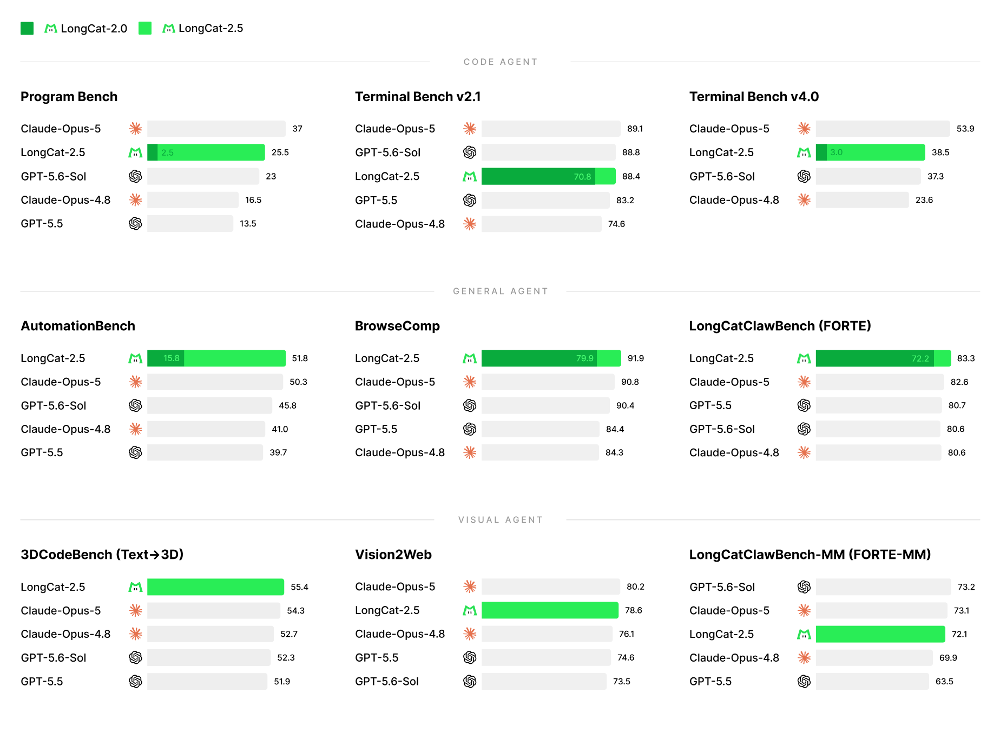

LongCat-2.5

---
Model Introduction
LongCat-2.5 is a native multimodal MoE model for long-horizon agentic tasks, with 1.6 trillion total parameters and approximately 48 billion activated per token. Building on LongCat-2.0, it combines visual understanding with agentic coding for complex codebase development, full-project builds, creative design, and 3D tasks. Long-sequence training, large-scale RL, multi-teacher learning, and infrastructure optimizations on domestic AI accelerators underpin these capabilities.

LongCat-2.5 Highlights
- Native Visual Modeling: Building on LongCat-Next, native-resolution visual features are converted into discrete tokens and jointly aligned with text in a shared semantic space.
- Long-Horizon Agentic RL: Training combines real-world engineering tasks and reproducible agent failures with efficient rollout strategies and safeguards against reward hacking, improving reliable end-to-end task execution.
- Multi-Teacher Learning: Specialized agent, reasoning, and interaction teachers guide the model through full-vocabulary KL distillation and Tree Attention, strengthening multi-turn execution, reasoning, instruction following, and safety.
- Efficient Long-Context Training: Supernode-aware parallelism, efficient sharding, and communication–computation overlap improve training efficiency, achieving 86% higher per-device throughput than the DDP baseline in reported long-sequence SFT tasks.
- RL Infrastructure: Drawing on community practices, aligned training and inference logic maintains bitwise-identical token log probabilities across training, prefill, and decoding. KV cache optimization and LSA improve serving efficiency, nearly doubling decode KV capacity without increasing TPOT on the tested workload.
For full technical details, see our blog.
Evaluation Results
We evaluate LongCat-2.5 across coding, general agent, and visual tasks. Scores marked with * are cited from public technical reports, blog posts, or official leaderboards; unmarked scores are measured in-house and are indicative only. - indicates an unreported score. See the expandable footnotes below for evaluation settings.
| Benchmark | LongCat-2.5 | LongCat-2.0 | GPT-5.5 | GPT-5.6-Sol | Claude-Opus-4.8 | Claude-Opus-5 | GLM-5.3 | kimi-k3 | DeepSeek-V4.1-Flash |
|---|---|---|---|---|---|---|---|---|---|
| Code Agent | |||||||||
| Terminal Bench v2.1 | 88.4 | 70.8 | 83.2* | 88.8* | 74.6* | 89.1* | 88.2* | 88.3* | 90.6* |
| Terminal Bench v4.0 | 38.5 | 3.0 | - | 37.3* | 23.6* | 53.9* | 41.8* | 12.6* | 31.2* |
| Program Bench (Almost Resolved) | 25.5 | 2.5 | 13.5* | 23.0* | 16.5* | 37.0* | 19.0* | 17.5* | 20.3* |
| DeepSWE (v1.1) | 64.6 | 9.7 | 67.0* | 72.7* | 59.0* | 68.8* | 66.9* | 67.5* | 74.2* |
| PaperBench | 82.1 | 45.2 | 80.0 | 83.3 | 72.9 | 79.1 | 73.7 | 77.5 | - |
| SWE Atlas - Codebase QnA | 58.3 | 33.1 | 45.4* | 46.0* | 57.3* | 63.2* | 58.3 | 54.3 | 55.2 |
| SWE Atlas - Refactoring | 55.2 | 35.7 | 44.8 | - | 46.7 | 51.9 | - | 49.5 | 56.7 |
| SWE Atlas - Test Writing | 47.8 | 28.0 | 42.6 | 45.9 | 49.6 | 62.2 | 42.2 | 42.2 | 48.9 |
| NL2Repo | 60.5 | 40.9 | - | 56.8* | 69.7* | 75.3* | 58.0* | 58.0* | 65.4* |
| LongCat AppDev (Internal) | 73.7 | 47.7 | - | 68.8 | - | 76.4 | 73.5 | 75.1 | - |
| General Agent | |||||||||
| BrowseComp | 91.9 | 79.9 | 84.4* | 90.4* | 84.3* | 90.8* | 81.0 | 91.2* | 91.5 |
| AutomationBench (v1.0.6) | 51.8 | 15.8 | 39.7 | 45.8* | 41.0* | 50.3* | 48.2* | 46.7* | 54.8* |
| HLE (w/ tools) | 63.1 | 37.5 | 52.2 | 58.0* | 57.9* | 64.7* | 62.5* | 56.0* | 63.9* |
| ALE (v1.1) | 38.5 | - | - | 30.3* | - | - | 26.2* | 35.2* | - |
| ResearchRubrics | 81.0 | 71.9 | - | 74.2 | - | 72.9 | 79.9 | 78.8 | 80.9 |
| MCP Atlas | 83.1 | 61.8 | 75.3* | 81.8* | 82.2* | 85.8* | 84.2* | 84.2* | 84.4 |
| JobBench | 65.4 | 44.4 | 38.3* | 45.4* | 48.4* | 66.7* | 61.4* | 52.9* | 63.2 |
| SkillsBench | 63.3 | 36.8 | 62.6* | 54.1* | 59.2* | 60.4* | 52.9 | - | 69.8* |
| GDPVal-AA rubrics | 84.8 | 72.9 | - | - | - | 87.7 | 87.7 | 86.6 | 86.8 |
| FrontierScience | 77.0 | 66.0 | - | - | - | 78.0 | 75.0 | 70.0 | 73.0 |
| SpreadsheetBench 2 | 34.9 | 24.1 | 30.2 | 33.3 | - | 33.0 | 35.8 | 34.8* | 33.0 |
| FinSearchComp (T3) | 63.4 | 42.4 | 62.2 | 62.2 | - | 64.0 | 62.2 | 64.0 | 64.3 |
| Claw-Eval (Pass^3) | 78.3 | 67.1 | - | 79.5 | 82.0 | 80.8 | 73.9 | 73.9 | - |
| LongCatClawBench (FORTE) | 83.3 | 72.2 | 80.7 | 80.6 | 80.6 | 82.6 | 85.6 | 86.3 | 73.5 |
| Visual | |||||||||
| 3DCodeBench (Text→3D) | 55.4 | - | 51.9 | 52.3 | 52.7 | 54.3 | 53.4 | 49.3 | 53.3 |
| Vision2Web | 78.6 | - | 74.6 | 73.5* | 76.1* | 80.2* | 77.8* | 79.0* | 79.2 |
| CharXiv-RQ (w/ tools) | 90.2 | - | 89.0* | 89.1* | 89.9* | 89.3* | - | 91.3* | 87.7 |
| MathVision (w/ tools) | 96.5 | - | 96.8* | 97.8* | 97.1* | - | - | 97.8* | 97.4 |
| VideoMME | 85.2 | - | - | 89.5* | 86.0* | - | - | 90.0* | - |
| PosterBench | 77.4 | - | - | - | 82.3 | - | 82.4 | 76.8 | 75.3 |
| LongCatClawBench-MM (FORTE-MM) | 72.1 | - | 63.5 | 73.2 | 69.9 | 73.1 | 69.0 | 70.7 | 72.8 |
<b>Footnotes: Evaluation Settings</b>
Unless otherwise specified, all LongCat-2.5 results use enable_thinking=on, temperature=1.0, and top_p=0.95.
Coding
- Terminal Bench v4.0 / v2.1, Program Bench, NL2Repo: Claude Code harness (v2.1.280) with max_seq_length = 512K; Terminal Bench v2.1 results are averaged over three independent runs.
- DeepSWE v1.1: mini-swe-agent at temperature = 1.0, top_p = 0.95 and max_seq_length = 1M; results are averaged over three independent runs.
- SWE Atlas - Codebase QnA and Test Writing: Claude Code (v2.1.116) with Claude Opus 4.5 as the judge (majority vote over three judgments); results are averaged over three independent runs.
Agentic
- BrowseComp: Custom lightweight harness with Verify and Discard-All modules (Discard-All threshold 256K), capped at 1,024 exploration rounds; only the
searchandbrowse_with_goaltools are available. - HLE w/ tools: Text-only subset, evaluated with Claude Code (v2.1.116); maximum generation length 256K tokens.
- MCP Atlas: Reasoning effort set to "max", temperature = 0.7, top_p = 0.95, 256K context.
- AutomationBench (public v1.0.6): All 600 public tasks, evaluated with the benchmark's official evaluation code; temperature = 1.0, top_p = 0.95.
- JobBench (Main 65): Claude Code harness (v2.1.280); scoring follows the official JobBench LLM-as-judge protocol (chained rubrics over the submitted deliverables) with gemini-3.6-flash as the judge; temperature = 1.0, top_p = 0.95, thinking enabled.
- SpreadsheetBench 2: Claude Code harness (v2.1.116), scoring follows the benchmark's official protocol; the Visualization subset is judged by gemini-3.6-flash, with charts rendered on Linux via headless LibreOffice (UNO object-level export) and a pure-Python OOXML/Pillow renderer as fallback.
- SkillsBench v1.1 (87 tasks): Evaluated with the Codex harness at temperature = 1.0, top_p = 0.95 and top_k = -1.
Visual
- Vision2Web: Claude Code (v2.1.7) at temperature = 1.0, top_p = 0.95, top_k = 50 and a sequence length of 256K.
- VideoMME: At most 2,048 frames sampled per video (1 fps) and at most 256 tokens per frame, with thinking mode enabled, using the prompt "Answer with the option's letter from the given choices directly. You can only answer one letter from A, B, C, or D."
- CharXiv-RQ (w/ tools) and MathVision (w/ tools): Temperature = 1.0 and top_p = 0.95, with a maximum generation length of 131,972 tokens.
Quantization
LongCat-2.5 applies W4A4 quantization to expert weights and activations, enabling native INT4 computation on domestic AI accelerators. Using FlatQuant-style learnable transformations, it maintains accuracy comparable to the unquantized model on evaluated benchmarks. A shared expert-input transformation enables quantization to be applied prior to token replication and dispatch, allowing the same INT4 representation to be reused across communication and computation. Fused kernels for transformation, scaling, quantization, and packing, together with optimized weight layouts and separately tuned prefill/decode pipelines, reduce data movement and communication overhead.
Compared with a W8A8 MoE baseline, online stress tests show 43.3% higher prefill throughput, 42.77% higher decode throughput, 15.91% lower TTFT, and 19.72% lower TPOT. Grouped GEMM (GMM) kernels achieve an average 1.73× speedup over W8A8. Combined with KV cache quantization, W4A4KV8 delivers 92% higher decode throughput than W8A8KV16.
Deployment
LongCat-2.5 can be deployed on NPU platforms.
NPU
For NPU deployment, please refer to SGLang-FluentLLM.
Model Usage
LongCat-2.5 is a hybrid model that supports both thinking mode and non-thinking mode.
- Thinking mode on(
enable_thinking=True), keeping all reasoning content(save_history_reasoning_content=True) for better performance. - Thinking mode off(
enable_thinking=False), for better token efficiency.
pythonimport openai def chat_with_thinking_mode_on_and_keeping_all_reasoning_content(client: openai.OpenAI, model_name: str): tools = [ { "type": "function", "function": { "name": "get_book_price", "description": "Look up a book's current price and stock in the bookstore catalog.", "parameters": { "type": "object", "properties": { "title": { "type": "string", "description": "Book title as printed on the cover" }, "edition": { "type": "string", "description": "Edition printed on the cover, if visible" } }, "required": ["title"] } } } ] messages = [ { "role": "user", "content": [ {"type": "text", "text": "What is in the picture?"}, {"type": "image_url", "image_url": { "url": "./assets/book.png"}} ] }, { "role": "assistant", "content": "The picture shows the cover of the novel **\"To Kill a Mockingbird\" by Harper Lee** — specifically the **65th Anniversary Edition** published by Penguin Books.\n\nKey details visible:\n- **Cover art:** A black silhouette of a child lying on a large tire swing hanging from a tree branch, set against a cream/off-white background\n- **Title and author:** Written in a hand-drawn, brushstroke-style font\n- **Gold seal:** Reads \"Over 42 million copies sold worldwide\" and \"65th Anniversary Edition\"\n- **Spine:** Shows the title, author's name, and the classic orange Penguin Books logo (also repeated at the bottom right of the front cover)", "reasoning_content": "\nThe user is asking what's in the picture. I can see it's a book cover of \"To Kill a Mockingbird\" by Harper Lee. Let me describe the details visible: it's a 65th Anniversary Edition, with a black silhouette illustration of a child on a tire swing hanging from a tree branch, the title in handwritten-style lettering, author's name Harper Lee, a gold seal indicating \"Over 42 million copies sold worldwide\" and \"65th Anniversary Edition\", and Penguin Books logo (orange oval with penguin) at the bottom. The spine shows the title, author, and penguin logo as well.\n\nThis is a simple image description question, so a concise answer is appropriate." }, { "role": "user", "content": "How much is this book?" }, { "role": "assistant", "tool_calls": [ { "id": "call_b96937c91aee4ede9d92c043", "index": 0, "type": "function", "function": { "name": "get_book_price", "arguments": "{\"title\": \"To Kill a Mockingbird\", \"edition\": \"65th Anniversary Edition\"}" } } ], "reasoning_content": "\nThe user is asking about the price of the book shown in the image. I have access to a tool called get_book_price that can look up a book's current price and stock. The book is \"To Kill a Mockingbird\" by Harper Lee, 65th Anniversary Edition.\n\nI should use the tool to look up the price. The edition visible is the 65th Anniversary Edition." }, { "role": "tool", "tool_call_id": "call_b96937c91aee4ede9d92c043", "name": "get_book_price", "content": "{\"price\": \"US $19.09\", \"source\": \"ebay\"}" } ] response = client.chat.completions.create( model=model_name, messages=messages, tools=tools, stream=False, extra_body={ "chat_template_kwargs": { "enable_thinking": True, "save_history_reasoning_content": True, } }, ) message = response.choices[0].message print(f"reasoning_content: {getattr(message, 'reasoning_content', None)}") return message.content
Chat Website
You can chat with LongCat-2.5 on our official website: https://longcat.ai/.
License Agreement
The model weights are released under the MIT License.
Any contributions to this repository are licensed under the MIT License, unless otherwise stated. This license does not grant any rights to use Meituan trademarks or patents.
See the LICENSE file for the full license text.
Usage Considerations
This model has not been specifically designed or comprehensively evaluated for every possible downstream application.
Developers should take into account the known limitations of large language models, including performance variations across different languages, and carefully assess accuracy, safety, and fairness before deploying the model in sensitive or high-risk scenarios. It is the responsibility of developers and downstream users to understand and comply with all applicable laws and regulations relevant to their use case, including but not limited to data protection, privacy, and content safety requirements.
Nothing in this Model Card should be interpreted as altering or restricting the terms of the MIT License under which the model is released.
Contact
Please contact us at longcat-team@meituan.com or open an issue if you have any questions.
---